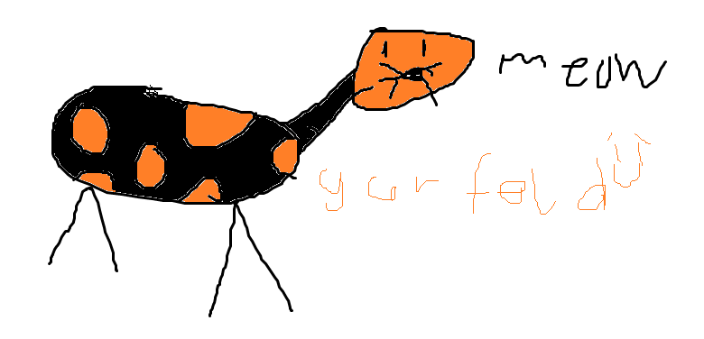

Other Holiday

Two facts about the other holiday:
- Fact 1: The publication became syndicated in 2013 in roughly 2,580 newspapers and journals and holds the Guinness World Record for being the world’s most widely syndicated comic strip
- Fact 2: Garfield launched on June 19, 1978
Credits:
- Image created by Ben Cave